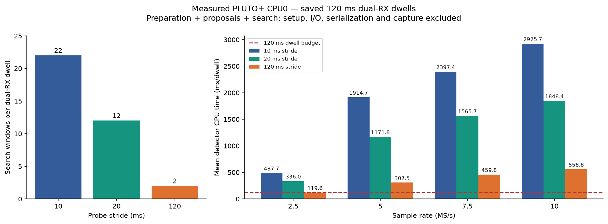
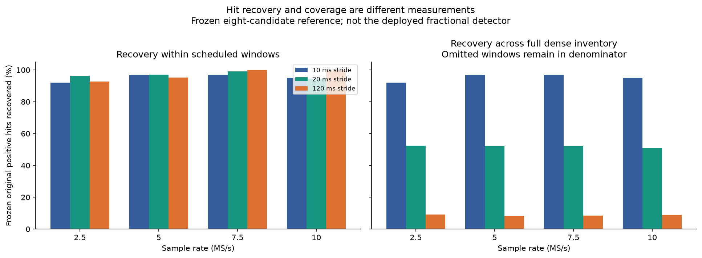
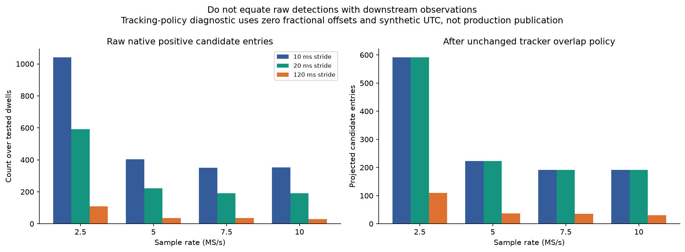

ARM GLRT stride comparison
Opt-in native runtime, not the deployed fractional detector or live capture worker. Identical saved dwells on PLUTO+ CPU0; no RF collection. See README.md for provenance, exact hit counts, and limitations.


